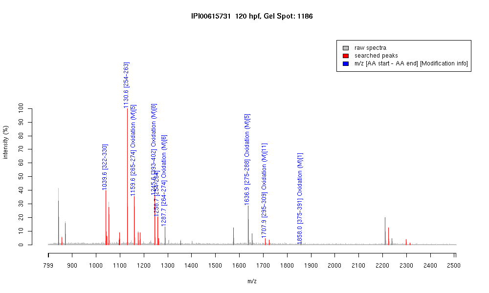

| Name | "PREDICTED: similar to tubulin, beta, 2isoform 3" |
|---|---|
| MW | 51068.6 |
| PI | 4.79 |
| Mascot Protein Score | 121 |
| Masses (matched / unmatched) | 9 / 27 |

| Peptide | MZ (calc) | MZ (observed) | Error (DA) | Error (PPM) | Start | Stop | Modifications |
|---|---|---|---|---|---|---|---|
| YLTVAAVFR | 1039.5935 | 1039.6053 | 0.0118 | 11 | 322 | 330 | |
| FPGQLNADLR | 1130.5953 | 1130.6117 | 0.0164 | 15 | 254 | 263 | |
| LAVNMVPFPR | 1159.6292 | 1159.6434 | 0.0142 | 12 | 265 | 274 | Oxidation (M)[5] |
| ISEQFTAMFR | 1245.5933 | 1245.6088 | 0.0155 | 12 | 393 | 402 | Oxidation (M)[8] |
| FPGQLNADLRK | 1258.6902 | 1258.6993 | 0.0091 | 7 | 254 | 264 | |
| KLAVNMVPFPR | 1287.7241 | 1287.7422 | 0.0181 | 14 | 264 | 274 | Oxidation (M)[6] |
| LHFFMPGFAPLTSR | 1636.8304 | 1636.8523 | 0.0219 | 13 | 275 | 288 | Oxidation (M)[5] |
| ALTVPELTQQMFDAK | 1707.8622 | 1707.8868 | 0.0246 | 14 | 295 | 309 | Oxidation (M)[11] |
| MAATFIGNSTAIQELFK | 1857.9415 | 1857.9761 | 0.0346 | 19 | 375 | 391 | Oxidation (M)[1] |